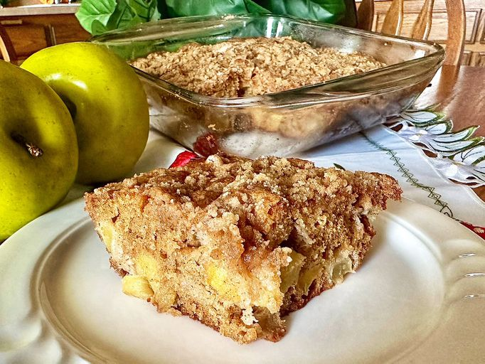

Apple Coffee Cake

Description
An apple coffee cake made with Granny Smith apples and vanilla yogurt that is very simple to make.
Its simplicity makes it a great desert to make after prepping a larger dinner meal when serving friends or family.
Ingredients
For Cake:
- 1 Cup all-purpose flour
- 3/4 teaspoon ground cinammon
- 1/2 teaspoon baking soda
- 1/4 teaspoon salt
- 3/4 cup brown sugar
- 1/4 cup unsalted butter, softened
- 1 large egg
- 1/4 cup sour cream
- 1/4 vanilla yogurt
- 1 teaspoon vanilla extract
- 2 cups diced Granny Smith Apple
For Topping:
- 1/4 cup brown sugar
- 1/4 cup all-purpose flour
- 2 tablespoons unsalted butter, cut into small pieces
- 1/2 teaspoon ground cinnamon
Steps
- Preheat the over to 350 degrees F (175 degrees C). Grease and generously flour an 8-inch square baking dish.
- Make the cake: Stir flour, cinnamon, baking soda, and salt together in a bowl
- Beat brown sugar and butter with an electric mixer in a large bowl until light, fluffy, and noticeable lighter in color.
- Mix in egg, then mix in sour cream, yogurt, and vanilla until well incorporated.
- Gradually mix in flour mixture, then fold in apples. Pour batter into prepared baking dish.
- Bake in the preheated oven until a toothpick inserted into the center comes out clean, 35 to 40 minutes. Remove from the oven and cool on a wire rack.
Tips
If you don't have vanilla yogurt, add 1/4 cup more sour cream or Greek yogurt with a dash more vanilla!
More Recipes:
Return Home